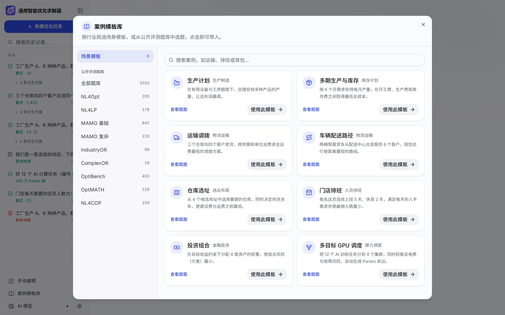

侧栏的“案例模板库”收录两类题目：场景模板用于从常见业务问题起步，公开评测题库用于浏览不同问题的表述和模型结构。首页示例下方的“浏览更多场景模板”也会打开这里。

场景模板#
每个模板都是一段完整的业务描述，数据写在题面里，点击“使用此模板”即可直接求解，也可以先改成自己的数字。
| 模板 | 行业 | 要做的决定 |
|---|---|---|
| 生产计划 | 生产制造 | 在设备与工序额度内安排各产品产量，使总利润最高 |
| 多期生产与库存 | 库存计划 | 按 6 个月需求安排每月产量，平衡开工费、生产费和库存费 |
| 运输调拨 | 物流运输 | 三个仓库向四个客户发货，使总运费最低 |
| 车辆配送路径 | 物流运输 | 两辆限载货车服务 6 个客户，使总行驶距离最短 |
| 仓库选址 | 选址布局 | 从 4 个候选地址选建仓库并决定供货关系，使建设费与运费之和最低 |
| 门店排班 | 人员排班 | 每人连上 5 天休 2 天，满足每天人手需求并使雇佣人数最少 |
| 投资组合 | 金融投资 | 在目标收益约束下分配 4 类资产权重，使风险最小 |
| 多目标 GPU 调度 | 算力调度 | 把 12 个训练任务分到 4 个集群，权衡电费与故障风险 |
官网首页的交互演示可以直接操作生产、排班和配送三个小案例。快速开始提供完整生产题面、录屏和附件，OR-Tools提供排班代码。
可下载的生产数据#
下载 production.json 或 production.csv，在题面说明产品、工时单位和资源容量，然后选择方法运行。
根据附件决定A、B的非负整数产量，最大化利润。
每种资源容量为8小时，工时数据的单位为小时/件。
JSON的usage按资源行、产品列排列。
公开题库目录#
“案例模板库”中的“公开评测题库”包含9组、2033条题面：
| 题库 | 数量 | 题库 | 数量 |
|---|---|---|---|
| NL4Opt | 205 | IndustryOR | 99 |
| NL4LP | 178 | ComplexOR | 18 |
| MAMO Easy | 642 | OptiBench | 403 |
| MAMO Complex | 210 | OptMATH | 128 |
| NL4COP | 150 |
题面采用 OPT-Agent 的整理版本，来源与许可保存在题库来源说明。
怎样使用一条题目#
打开题库，选择分组和题面，阅读后带入输入区。根据变量域、约束和目标选择方法与求解器，再运行。完成后可用标签记录来源，并导出模型、代码和结果。
如果要比较方法，可选一条结构清楚的题，固定附件与预设，在方法对比中并排运行。需要额外数据的题目，可先在需求助手中补充字段与单位。
保存自己的案例#
将业务数据整理成附件，用备注记录字段含义和采用条件，再为运行添加标签。相同任务的后续变更通过调整条件和场景比较关联起来，逐步形成团队可复用的案例库。